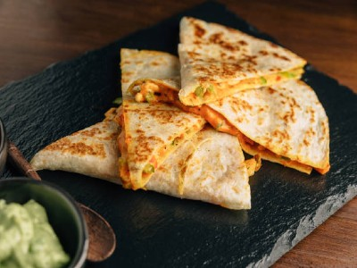

|  |
Food's name: Peanut butter and banana quesadilla▸ Ingredients:
▸ Time to prepare: 15 minutes ▸ Approx quantity: 1 cake |
▸ Detailed recipe:
- Spread peanut butter over the entire tortilla.
- Cut the banana and arrange the slices on the tortilla halves.
- Sprinkle cinnamon over bananas and fold the tortilla in half.
- Cut it into triangles and enjoy.
=> Try it and see if it's delicious !
▸ Calories and related information: